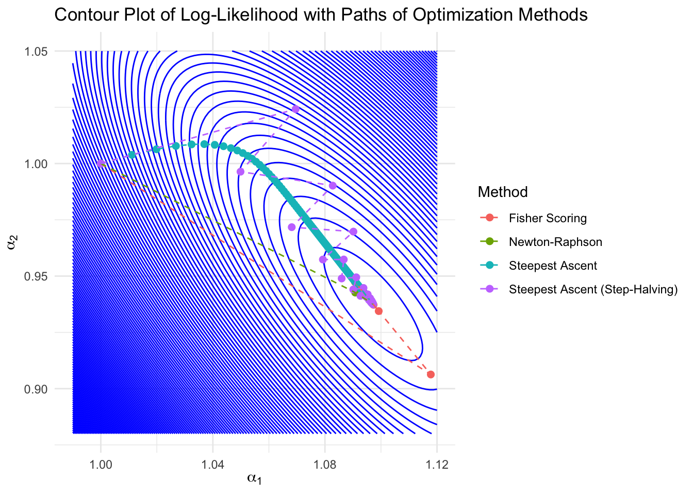

Code
oilspills <- read.csv("oilspills.dat", sep="")
N <- oilspills$spills
b1 <- oilspills$importexport
b2 <- oilspills$domestic
# Initial guess for alpha values
initial_alpha <- c(1,1 )Alert - You are welcome to use any template, but please do not use my posts.
Creo Hsia
November 14, 2024
Assume that \(N_i|b_{i1},b_{i2};\alpha_1,\alpha_2\sim \textnormal{Poisson}(\lambda_i)\), where \(\lambda_i=\alpha_1 b_{i1}+\alpha_2 b_{i2}\). Then, the PMF (Probability Mass Function) is \[ P(N_i=n_i)=\frac{(\alpha_1 b_{i1}+\alpha_2 b_{i2})^{n_i}}{n_i!}\exp\{-(\alpha_1 b_{i1}+\alpha_2 b_{i2}) \} \] and the log-likelihood is \[ \ell(\alpha_1,\alpha_2|N_i, b_{i1},b_{i2})=N_i\log (\alpha_1 b_{i1}+\alpha_2 b_{i2})-(\alpha_1 b_{i1}+\alpha_2 b_{i2})-\log(N_1!) \]
Hence the log-likelihood of the data is \[ \ell(\alpha_1,\alpha_2|N_{1:m}, b_{11:m1},b_{12:m2})=\sum_{i=1}^mN_i\log (\alpha_1 b_{i1}+\alpha_2 b_{i2})-(\alpha_1 \sum_{i=1}^mb_{i1}+\alpha_2 \sum_{i=1}^mb_{i2})-\sum_{i=1}^m\log(N_i!) \]
Here \(b_{11:m1}\) means \(b_{11},b_{21}\ldots b_{m1}\).
To make our notation tidiness, define \[ B_{1m}=\sum_{i=1}^mb_{i1},\quad B_{2m}=\sum_{i=1}^mb_{i2},\quad C_m=\sum_{i=1}^m\log(N_i!) \] Hence \[ \ell(\alpha_1,\alpha_2|N_{1:m}, b_{11:1m},b_{12:2m})=\sum_{i=1}^mN_i\log (\alpha_1 b_{i1}+\alpha_2 b_{i2})-\alpha_1B_{1m}-\alpha_2B_{2m}-C_m \] The first derivation is \[ \nabla_{\boldsymbol{\alpha}} \ell =\begin{pmatrix}\frac{\partial \ell}{\partial \alpha_1}\\ \frac{\partial \ell}{\partial \alpha_1}\end{pmatrix}= \begin{pmatrix}\sum_{i=1}^m\frac{N_ib_{i1}}{\alpha_1 b_{i1}+\alpha_2 b_{i2}}-B_{1m}\\ \sum_{i=1}^m\frac{N_ib_{i2}}{\alpha_1 b_{i1}+\alpha_2 b_{i2}}-B_{2m}\end{pmatrix} \] And the Hessian is \[ \begin{aligned} \nabla_{\boldsymbol{\alpha}}\nabla^T_{\boldsymbol{\alpha}} \ell=&\begin{pmatrix} \frac{\partial\ell^2}{\partial^2 \alpha_1}& \frac{\partial\ell^2}{\partial \alpha_1\partial \alpha_2}\\ \frac{\partial\ell^2}{\partial \alpha_2\partial \alpha_1}&\frac{\partial\ell^2}{\partial^2 \alpha_2}\end{pmatrix}\\ =&\begin{pmatrix} -\sum_{i=1}^m\frac{N_{i1}b_{i1}b_{i1}}{(\alpha_1 b_{i1}+\alpha_2 b_{i2})^2} &-\sum_{i=1}^m\frac{N_{i1}b_{i1}b_{i2}}{(\alpha_1 b_{i1}+\alpha_2 b_{i2})^2}\\ -\sum_{i=1}^m\frac{N_{i1}b_{i2}b_{i1}}{(\alpha_1 b_{i1}+\alpha_2 b_{i2})^2}& -\sum_{i=1}^m\frac{N_{i1}b_{i2}b_{i2}}{(\alpha_1 b_{i1}+\alpha_2 b_{i2})^2} \end{pmatrix} \end{aligned} \]
Hence the Fisher score is
\[ \begin{aligned} I(\alpha)=&-E\nabla_{\boldsymbol{\alpha}}\nabla^T_{\boldsymbol{\alpha}} \ell\\ =&\begin{pmatrix} \sum_{i=1}^m\frac{b_{i1}b_{i1}}{\alpha_1 b_{i1}+\alpha_2 b_{i2}} &\sum_{i=1}^m\frac{b_{i1}b_{i2}}{\alpha_1 b_{i1}+\alpha_2 b_{i2}} \\ \sum_{i=1}^m\frac{b_{i2}b_{i1}}{\alpha_1 b_{i1}+\alpha_2 b_{i2}} & \sum_{i=1}^m\frac{b_{i2}b_{i2}}{\alpha_1 b_{i1}+\alpha_2 b_{i2}} \end{pmatrix} \end{aligned} \]
Load data (click to down load data and description)
Define some function
# Function to calculate the log-likelihood
log_likelihood <- function(alpha, N, b1, b2) {
lambda <- alpha[1] * b1 + alpha[2] * b2
sum(dpois(N, lambda,log = TRUE))
}
# Function to calculate the gradient
gradient <- function(alpha, N, b1, b2) {
lambda <- alpha[1] * b1 + alpha[2] * b2
grad1 <- sum((N * b1) / lambda - b1)
grad2 <- sum((N * b2) / lambda - b2)
return(c(grad1, grad2))
}
# Function to calculate the Hessian matrix
hessian <- function(alpha, N, b1, b2) {
lambda <- alpha[1] * b1 + alpha[2] * b2
h11 <- -sum((N * b1^2) / (lambda^2))
h12 <- -sum((N * b1 * b2) / (lambda^2))
h21 <- h12
h22 <- -sum((N * b2^2) / (lambda^2))
return(matrix(c(h11, h12, h21, h22), nrow = 2))
}
# Function to calculate the Fisher information
fisher_information <- function(alpha, b1, b2) {
lambda <- alpha[1] * b1 + alpha[2] * b2
fisher_info <- matrix(0, nrow = 2, ncol = 2)
fisher_info[1, 1] <- sum(b1^2 / lambda)
fisher_info[1, 2] <- sum(b1 * b2 / lambda)
fisher_info[2, 1] <- fisher_info[1, 2]
fisher_info[2, 2] <- sum(b2^2 / lambda)
return(fisher_info)
}Newton method
# Update the Newton-Raphson method to include iteration number in the path matrix
newton_raphson <- function(N, b1, b2, initial_alpha, tol = 1e-6, max_iter = 100) {
alpha <- initial_alpha # Initial parameter values
path_matrix <- matrix(NA, nrow = max_iter + 1, ncol = 3) # Matrix to store iteration number and alpha values
path_matrix[1, ] <- c(1, alpha) # Store initial alpha values at iteration 1
for (i in 1:max_iter) {
# Compute gradient and Hessian at the current alpha
grad <- gradient(alpha, N, b1, b2)
hess <- hessian(alpha, N, b1, b2)
# Calculate the step size using the inverse of the Hessian and gradient
step <- solve(hess) %*% grad
# Update alpha by subtracting the step size (moving towards the maximum)
alpha_new <- alpha - step
# Store the new alpha values and the iteration number in the path matrix
path_matrix[i + 1, ] <- c(i + 1, alpha_new)
# Check for convergence based on the relative change in alpha
relative_change <- sqrt(sum((alpha_new - alpha)^2)) / sqrt(sum(alpha^2))
if (relative_change < tol) break # Stop if change is below the tolerance threshold
alpha <- alpha_new # Update alpha for the next iteration
}
# Trim the path matrix to include only completed iterations
path_matrix <- path_matrix[1:(i + 1), , drop = FALSE]
return(list(estimate = alpha, path = path_matrix,method="Newton")) # Return final alpha and path
}Fisher score method
# Update the Fisher scoring method to include iteration number in the path matrix
fisher_scoring <- function(N, b1, b2, initial_alpha, tol = 1e-6, max_iter = 100) {
alpha <- initial_alpha # Initial parameter values
path_matrix <- matrix(NA, nrow = max_iter + 1, ncol = 3) # Matrix to store iteration number and alpha values
path_matrix[1, ] <- c(1, alpha) # Store initial alpha values at iteration 1
for (i in 1:max_iter) {
# Compute gradient and Fisher information at the current alpha
grad <- gradient(alpha, N, b1, b2)
fisher_info <- fisher_information(alpha, b1, b2)
# Calculate the step size using the inverse of the Fisher information and gradient
step <- solve(fisher_info) %*% grad
# Update alpha by adding the step size (moving towards the maximum)
alpha_new <- alpha + step
# Store the new alpha values and the iteration number in the path matrix
path_matrix[i + 1, ] <- c(i + 1, alpha_new)
# Check for convergence based on the relative change in alpha
relative_change <- sqrt(sum((alpha_new - alpha)^2)) / sqrt(sum(alpha^2))
if (relative_change < tol) break # Stop if change is below the tolerance threshold
alpha <- alpha_new # Update alpha for the next iteration
}
# Trim the path matrix to include only completed iterations
path_matrix <- path_matrix[1:(i + 1), , drop = FALSE]
return(list(estimate = alpha, path = path_matrix,method="Fisher score")) # Return final alpha and path
}Steepest ascent method
# Update the steepest ascent method to include iteration number in the path matrix
steepest_ascent <- function(N, b1, b2, initial_alpha, tol = 1e-6, max_iter = 300, step_size = 0.01) {
alpha <- initial_alpha # Initial parameter values
path_matrix <- matrix(NA, nrow = max_iter + 1, ncol = 3) # Matrix to store iteration number and alpha values
path_matrix[1, ] <- c(1, alpha) # Store initial alpha values at iteration 1
for (i in 1:max_iter) {
# Compute gradient at the current alpha
grad <- gradient(alpha, N, b1, b2)
# Update alpha in the direction of the gradient, scaled by step size
alpha_new <- alpha + step_size * grad
# Store the new alpha values and the iteration number in the path matrix
path_matrix[i + 1, ] <- c(i + 1, alpha_new)
# Check for convergence based on the relative change in alpha
relative_change <- sqrt(sum((alpha_new - alpha)^2)) / sqrt(sum(alpha^2))
if (relative_change < tol) break # Stop if change is below the tolerance threshold
alpha <- alpha_new # Update alpha for the next iteration
}
# Trim the path matrix to include only completed iterations
path_matrix <- path_matrix[1:(i + 1), , drop = FALSE]
return(list(estimate = alpha, path = path_matrix,method="steepest_ascent")) # Return final alpha and path
}steepest ascent with step-halving
# Update the steepest ascent with step-halving method to include iteration number in the path matrix
steepest_ascent_halve <- function(N, b1, b2, initial_alpha, tol = 1e-6, max_iter = 100) {
alpha <- initial_alpha # Initial parameter values
path_matrix <- matrix(NA, nrow = max_iter + 1, ncol = 3) # Matrix to store iteration number and alpha values
path_matrix[1, ] <- c(1, alpha) # Store initial alpha values at iteration 1
for (i in 1:max_iter) {
# Compute gradient at the current alpha
grad <- gradient(alpha, N, b1, b2)
# Start with an initial step size of 1
step_size <- 1
alpha_new <- alpha + step_size * grad
# Apply step-halving if the new alpha does not improve the log-likelihood
while (log_likelihood(alpha_new, N, b1, b2) < log_likelihood(alpha, N, b1, b2)) {
step_size <- step_size / 2 # Halve the step size
alpha_new <- alpha + step_size * grad # Update alpha with the reduced step size
}
# Store the new alpha values and the iteration number in the path matrix
path_matrix[i + 1, ] <- c(i + 1, alpha_new)
# Check for convergence based on the relative change in alpha
relative_change <- sqrt(sum((alpha_new - alpha)^2)) / sqrt(sum(alpha^2))
if (relative_change < tol) break # Stop if change is below the tolerance threshold
alpha <- alpha_new # Update alpha for the next iteration
}
# Trim the path matrix to include only completed iterations
path_matrix <- path_matrix[1:(i + 1), , drop = FALSE]
return(list(estimate = alpha, path = path_matrix,method="steepest_ascent_with_step-halving")) # Return final alpha and path
}Run all
Plot
library(ggplot2)
# Convert path matrices to data frames for plotting
convert_path_matrix_to_df <- function(path_matrix, method) {
data.frame(
iteration = path_matrix[, 1],
alpha1 = path_matrix[, 2],
alpha2 = path_matrix[, 3],
method = method
)
}
# Convert paths to data frames
path_newton_df <- convert_path_matrix_to_df(result_newton$path, "Newton-Raphson")
path_fisher_df <- convert_path_matrix_to_df(result_fisher$path, "Fisher Scoring")
path_steepest_ascent_df <- convert_path_matrix_to_df(result_steepest_ascent$path, "Steepest Ascent")
path_steepest_ascent_halve_df <- convert_path_matrix_to_df(result_steepest_ascent_halve$path, "Steepest Ascent (Step-Halving)")
# Combine all paths into a single data frame
path_df <- rbind(path_newton_df,
path_fisher_df,
path_steepest_ascent_df,
path_steepest_ascent_halve_df)Plot
# Create a grid for alpha1 and alpha2 values for the contour plot
alpha1_seq <- seq(0.99, 1.12, length.out = 100)
alpha2_seq <- seq(0.88, 1.05, length.out = 100)
grid <- expand.grid(alpha1 = alpha1_seq, alpha2 = alpha2_seq)
# Function to calculate the log-likelihood for the grid using dpois
likelihood_grid <- function(alpha1, alpha2, N, b1, b2) {
alpha <- c(alpha1, alpha2)
lambda <- alpha[1] * b1 + alpha[2] * b2
sum(dpois(N, lambda, log = TRUE))
}
# Calculate log-likelihood values for the grid
grid$likelihood <- apply(grid, 1, function(row) {
likelihood_grid(row["alpha1"], row["alpha2"], N, b1, b2)
})
# Plot the contour and paths
ggplot() +
geom_contour(data = grid, aes(x = alpha1, y = alpha2, z = likelihood), bins = 150, color = "blue") +
geom_point(data = path_df, aes(x = alpha1, y = alpha2, color = method), size = 2) +
geom_path(data = path_df, aes(x = alpha1, y = alpha2, color = method, group = method), linetype = "dashed") +
theme_minimal() +
labs(
title = "Contour Plot of Log-Likelihood with Paths of Optimization Methods",
x = expression(alpha[1]),
y = expression(alpha[2]),
color = "Method"
)
Estimate sd
# Function to estimate standard errors from the Fisher information matrix
estimate_standard_errors <- function(alpha_mle, b1, b2) {
fisher_info <- fisher_information(alpha_mle, b1, b2)
fisher_info_inv <- solve(fisher_info) # Inverse of the Fisher information matrix
standard_errors <- sqrt(diag(fisher_info_inv)) # Square root of the diagonal elements
return(standard_errors)
}
# Use the MLEs from both the Newton-Raphson and Fisher scoring methods
alpha_mle_newton <- result_newton$estimate
standard_errors_newton <- estimate_standard_errors(alpha_mle_newton, b1, b2)
cat("Standard errors for the MLEs (alpha_1 and alpha_2) using Newton-Raphson:\n",
standard_errors_newton,"\n")
#>| Standard errors for the MLEs (alpha_1 and alpha_2) using Newton-Raphson:
#>| 0.437556 0.6314687iteration
print_iteration_counts <- function(results_list) {
for (result in results_list) {
cat("Iterations for", result$method,"method:", nrow(result$path),"\n")
}
}
# Create a list of results for iteration summary
results_list <- list(result_newton, result_fisher, result_steepest_ascent, result_steepest_ascent_halve)
# Print iteration counts for each method
print_iteration_counts(results_list)
#>| Iterations for Newton method: 5
#>| Iterations for Fisher score method: 13
#>| Iterations for steepest_ascent method: 301
#>| Iterations for steepest_ascent_with_step-halving method: 44